The first part of this course focuses on applied production analysis. We study microeconomic production theory and explore empirical applications. For the empirical component, we will be using R.
Supplementary reading materials include Introduction to Econometric Production Analysis with R (sixth draft version) by Arne Henningsen (Henningsen 2024, chaps. 1–5), and for the theoretical component, Microeconomic Analysis by Hal Varian (Varian 1992, chaps. 1–6).
The core question involves estimating production technology based on observational micro-level data of firms’ behavior. This methodology can be applied in various contexts, including profit-motivated firms in the private sector, the performance of non-profit organizations, and across different industries such as agriculture, manufacturing, and services.
There are essentially four different methods used in the applied production analysis.
Least square methods for estimation of production functions
Total-factor productivity (TFP) indices
Data envelopment analysis (DEA)
Stochastic frontier analysis (SFA)
In this course, we will focus on the first two methods, which assume that all firms are technically efficient. In contrast, methods three and four provide measures of relative efficiency among a group of firms, which implicitly assume not all firms are technically efficient.
Efficiency and productivity
Efficiency and productivity are distinct technical concepts. The following diagram may help illustrate these distinctions.
Productivity and technical efficiency
Consider a simple illustration of production method that converts an input x to an output y, and the relationship is given by the curve OF in Figure 1. There are three firms who are engaged in this productive activity, and their input-output combinations are given by A, B, and C, respectively. We can say that firm producing at A is technically inefficient compared to the firm producing at B, since the former is not producing as much output as the other one, even if both are using the same volume of input. By this argument, any production point below the OF curve are technically inefficient. Are all technically efficient points equally productive? Not necessarily! If we measure productivity by output produced per unit of input, then the firm producing at C has the productive use of its input.
Allocative efficiency is another important concept, which requires choosing the optimal combination of inputs to produce a given quantity of output. Allocative and technical efficiency together provide an overall efficiency measure.
Data set
We will be using a simple dataset for the empirical analysis of the theoretical concepts. The data set is shared in the micEcon R package (Henningsen 2005). The data set consists of production data of 140 French apple producers from the year 1986. These data are extracted from a panel data studied in (Ivaldi et al. 1996).
library(micEcon); library(psych); library(lmtest)
If you have questions, suggestions, or comments regarding one of the 'micEcon' packages, please use a forum or 'tracker' at micEcon's R-Forge site:
https://r-forge.r-project.org/projects/micecon/
Loading required package: zoo
Attaching package: 'zoo'
The following objects are masked from 'package:base':
as.Date, as.Date.numeric
options(scipen =999)data( "appleProdFr86", package ="micEcon" )help("appleProdFr86")dat <- appleProdFr86rm(appleProdFr86)head(dat, 5) # A truncated preview of the data set
vLab: costs of labour (including remuneration of unpaid family labour).
vMat: costs of intermediate materials (e.g. seedlings, fertilizer, pesticides, fuel).
qApples: quantity index of produced apples.
qOtherOut: quantity index of all other outputs.
qOut: quantity index of all outputs (not in the original data set, calculated as 580,000 ⋅⋅ (qApples + qOtherOut)).
pCap: price index of capital goods pLab: price index of labour.
pMat: price index of materials.
pOut: price index of the aggregate output (not in the original data set, artificially generated).
adv: dummy variable indicating the use of an advisory service (not in the original data set, artificially generated).
Note that the firms were engaged in multi-output production. Analyzing this can be challenging, as firms optimize the mix of both inputs and outputs based on relative returns. As discussed in (Ivaldi et al. 1996), non-specialization was a crucial aspect of the agricultural production process.
Primal versus dual approach
Duality is a fundamental concept in optimization, particularly in linear programming and game theory. The essence of duality is that every optimization problem (referred to as the primal problem) can be associated with a corresponding dual problem, where the solution to one provides bounds to the solution of the other.
Since the study of economics draws heavily on optimization theory, it is no surprise that duality plays a significant role in economics as well. For example, in the context of producer behavior, the primal approach involves studying how firms can optimally decide on the input mix for a given production technology to achieve an objective, such as minimizing expenses to produce a certain volume of output. The resulting optimal expense is referred to as the cost function, which characterizes the minimum expenditure needed to produce a specific quantity. Duality tells us that the cost function is sufficiently informative, allowing us to confidently trace back the production technology under mild conditions.
Prior to 1970, economists mostly followed Samuelson’s classic treatment of profit-maximizing firms, where firms face technological constraints, typically modeled with a smooth production function, and standard optimization techniques are used to infer producer responses to price perturbations. This approach is often referred to as the primal approach. Later, the dual approach gained prominence, where exploring cost, profit, or revenue functions allows us to trace back the technological constraints.
In this course, we will first explore the primal approach, both theoretically and empirically. Later, we will conduct similar exercises using the dual approach.
Production technology
The set of all combinations of inputs and outputs that comprise a technologically feasible way to produce is called a production (possibility) set.1
The function describing the boundary of this set is known as the production function. It measures the maximum possible output from a given amount of input.
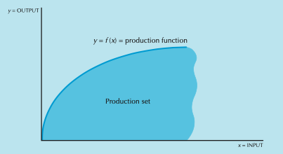
Production set and production function
As discussed before, a point in the interior of the production set represents a case of technically inefficient production. In the two-input case there is a convenient way to depict production relations in the form of an isoquant or indifference curve. An isoquant is the set of all possible combinations of inputs \((x_1,...,x_n)\) producing a given amount of output \(y\).
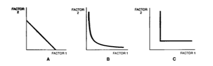
Isoquants—Linear, Cobb-Douglas, and Leontief production technology
The isoquants move in the top-right direction as \(y\) goes up, since we need more inputs to produce more output. The top-right section of the isoquants, and including the points on the isoquants, are often referred to as the input requirement set. Observe that for a given volume of output y, the input requirement set consists of all points on all the isoquants corresponding to the output level y or higher.
A technology is called convex if the input requirement set is convex. For a convex technology, a convex combination of input choices increases the output volume.
A technology is called monotone if its input requirement set satisfies the monotonicity property, which suggests that for any input vector \(\mathbf{x}\) belonging to the input requirement set, all input vectors weakly greater than \(\mathbf{x}\) must belong to the input requirement set. The idea is that if we increase the amount of each input beyond what is required to produce a certain volume of output, we can produce an output at least as large as the initial volume.
While a production function is a useful way to characterize the production possibility in one-output case, a general representation of multi-output and multi-input production possibility is given by a transformation function\(T:R^{n+m}\rightarrow R\) such that \(T(\mathbf{x},\mathbf{q})=0\) represents a relationship where an input vector \(\mathbf{x}\) is used to produce an output vector \(\mathbf{q}\).
Some examples of useful production functions
Linear: \(y=\beta_0+\sum_{i=1}^{N}{\beta_i x_i}\)
Cobb-Douglas: \(y=\beta_0\prod_{i=1}^{N}{x_i}^{\beta_i}\), or equivalently, \(\ln y=\beta_0+\sum_{i=1}^{N}{\beta_i \ln x_i}\)
Consider the following experiment: Let’s scale the amount of all inputs up by some constant factor k; what will happen to the output?
If the output goes up by the same factor k, we call it a constant returns to scale (CRS) technology. Mathematically, a CRS technology exhibits \(f(k \mathbf{x})=k\mathbf{f(x)}\).
If the output increases less than k times, we call it a decreasing returns to scale (DRS) technology. Mathematically, a DRS technology exhibits \(f(k \mathbf{x})<k\mathbf{f(x)}\).
If the output increases more than k times, we call it an increasing returns to scale (IRS) technology. Mathematically, an IRS technology exhibits \(f(k \mathbf{x})>k\mathbf{f(x)}\).
Test exercise: Consider the following Cobb-Douglas production function is given by \(f(x_1,x_2) = Ax_1^{a}x_2^{b}\). Find conditions under which the technology exhibits different kinds of returns to scale.
Productivity
Average and marginal product
Single-input case:
Consider a production relationship given by \(y=f(x)\) .
The average productivity of the input \(x\) is defined by \(AP=f(x)/x\) .
The marginal productivity of the input \(x\) is defined by \(MP=\partial{f(x)}/\partial{x}\).
Multi-input case:
As in the single-input case, we can define the average product or marginal product of the \(i^{\text{th}}\) input with respect to each inputs. However, these measures then reflect simply partial productivity measures, and they can only be computed for some given values of other inputs.
Observe that output elasticities are free of the unit of measurement.
The elasticity of scale is the sum of output elasticities of all input: \(\varepsilon=\sum_i \varepsilon_i\).
A technology exhibiting IRS, CRS, and DRS has the elasticity of scale \(\varepsilon > 1\), \(\varepsilon = 1\), and \(\varepsilon < 1\), respectively. Using calculus, it can be derived that if a firm has an elasticity of scale as \(1\) at its current size of production and if the elasticity of scale only monotonically decreases with further increase in size, then the firm has the most productive scale size at the current level.
Total factor productivity
In multi-input production process, it is often desirable to calculate the total factor productivity (TFP) by aggregating inputs into an input index:
\[
TFP=\frac{y}{X},
\]
where \(X\) is a quantity aggregating index of all inputs.
Indexing
Indexing is used for measuring changes in a set of related variables. Conceptually, it can be used for comparison over time or space or both. Examples include price indices for measuring changes to consumer price, export or import prices, quantity indices measuring changes in output volume by a firm or industry over time or across firms.
As an illustration, consider a formula for measuring the change of the value of a basket consisting of \(n\) goods between the two period \(t\) and \(s\) can be measured by
However, as time changes between \(s\) and \(t\), it is unclear whether the change in value is driven by the changes in \(p_i\) or changes in \(x_i\). To address this issue, we can fix one of the two variables, and look at the value index. For example, if we fix the prices (either to current or old prices), we get a measure due to changes in quantity, and it then reflects a quantity index. Similarly, if we fix the quantity (either to current or old quantity levels), we will get a price index. Although we consider changes with respect to time, we can use the concept for other types of changes, for example, variation across firms.
Various (quantity) indices:
Denoting the good by subscript \(i\), the sample observation by subscript \(j\), and a base observational value (for example, the mean of the sample observations) by \(0\), we measure
Average product measures vary considerably across firms, with most firms falling into the relatively low-productivity range.
# Plotting average partial productivity of one input against another across firmsplot( dat$apCap, dat$apLab )
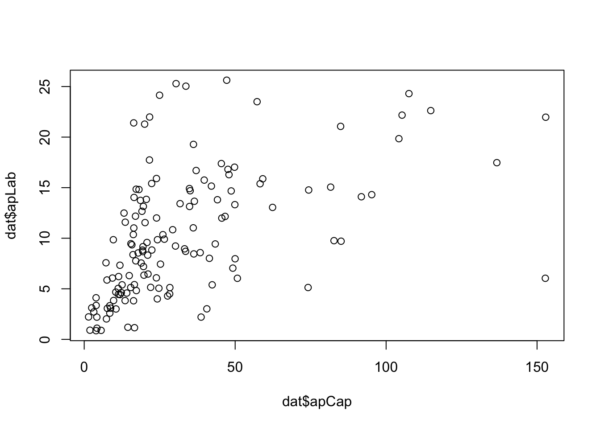
plot( dat$apCap, dat$apMat )
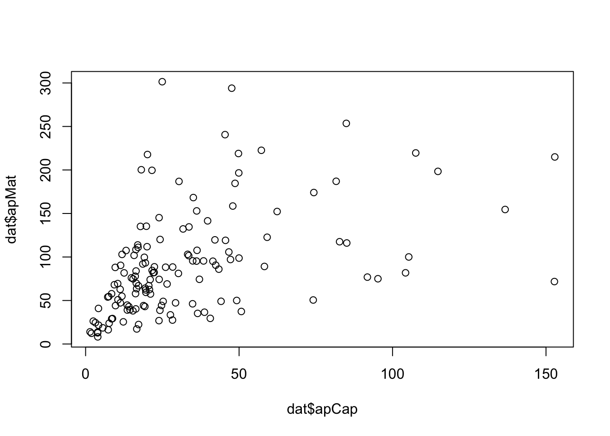
plot( dat$apLab, dat$apMat )
It appears that the average products of the three inputs are positively correlated.
# Plotting partial average products against outputplot( dat$qOut, dat$apCap, log ="x" )
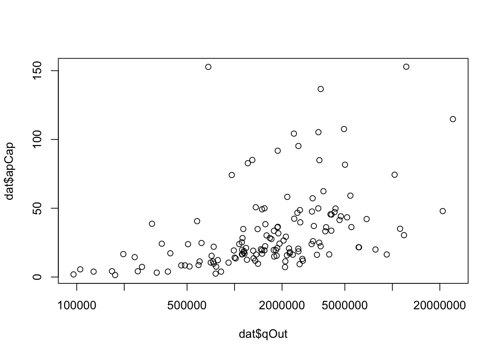
plot( dat$qOut, dat$apLab, log ="x" )
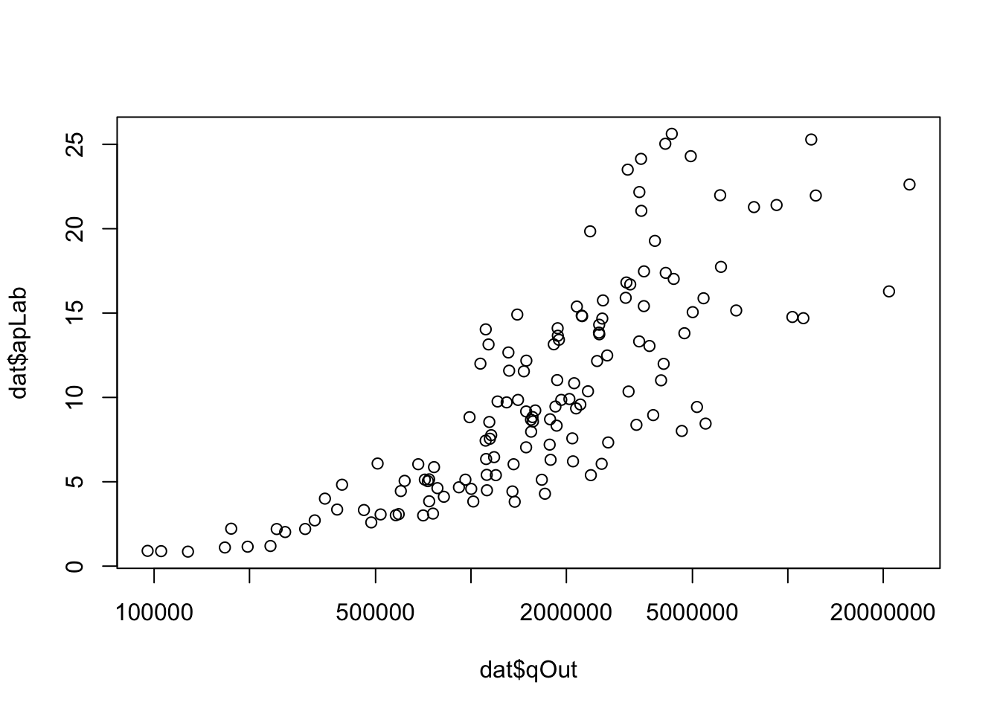
plot( dat$qOut, dat$apMat, log ="x" )
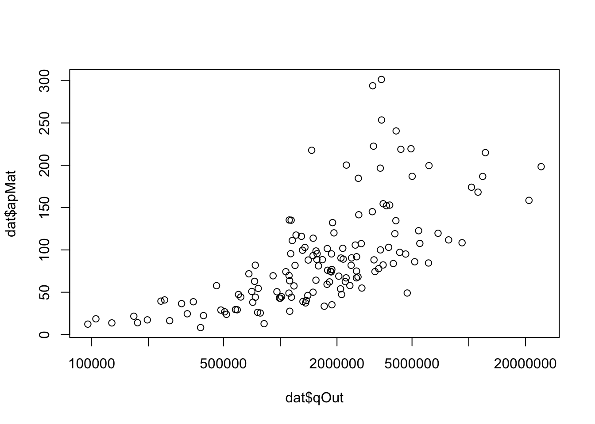
We did not have data on firm size. Assuming the volume of output as a proxy for firm size, we examined the plot of partial average products of each input against output. It appears that firms producing more also exhibit higher output per unit of input used.
# Measuring total factor productivitydat$tfp <- dat$qOut / dat$X # using Fisher indexdat$tfpP <- dat$qOut / dat$XP # using Paasche Indexdat$tfpL <- dat$qOut / dat$XL # using Laspeyres Indexhist( dat$tfp )
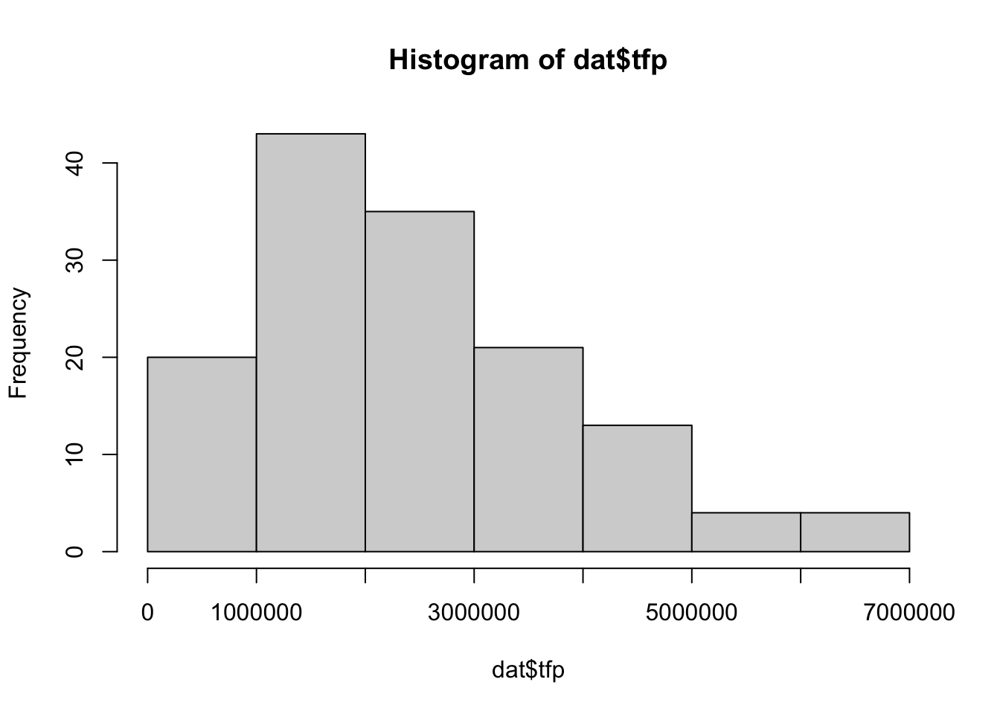
TFP varies considerably across firms, with the majority falling into the relatively low-TFP range.
# Plotting tfp against output and input quantity indexplot( dat$qOut, dat$tfp, log ="x" )
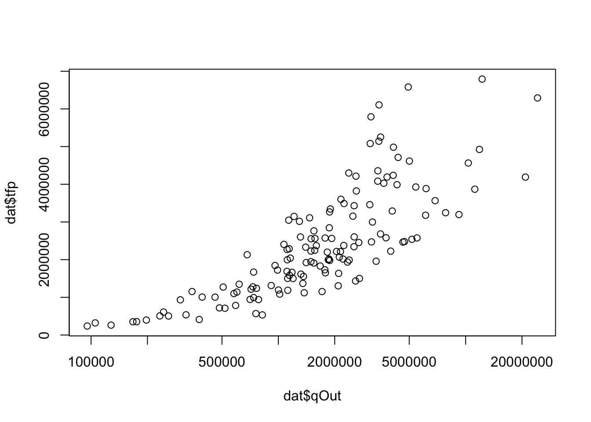
plot( dat$X, dat$tfp, log ="x" )
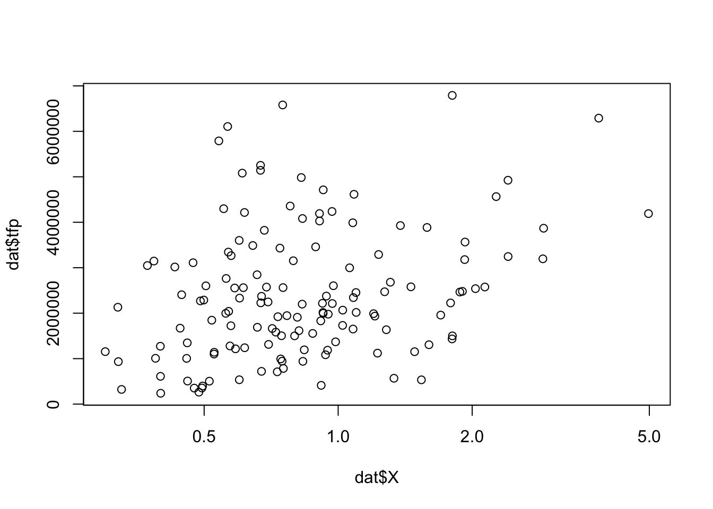
These plots indicate that larger firms, characterized by higher output volumes, are typically associated with greater TFP. However, the plot of TFP against the aggregate input index shows only a mild positive association between the two.
# Does advisory service (a dummy) affects tfp?boxplot( tfp ~ adv, data = dat )
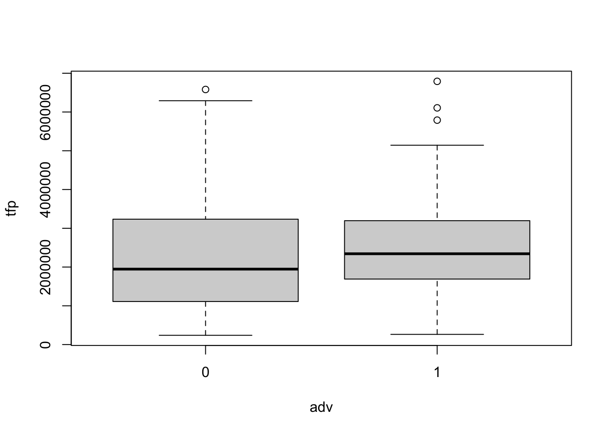
boxplot( log(qOut) ~ adv, data = dat )
Some firms used advisory services. It appears that firms with or without advisory services use similar input quantities; however, those with advisory services are associated with a slightly higher TFP (in terms of expected value).
Input substitution
What might cause variation in the input mix chosen by different firms? Are all firms operating with allocative efficiency?
Marginal rate of technical substitution
Suppose that we are operating at an input mix \((x_1,x_2)\) and that we consider substituting a little bit of input 1 with input 2 to produce the same amount of output y. How much extra of input 2 do we need? Mathematically, this is measured by the slope of the isoquant; we refer to it as the Marginal Rate of Technical Substitution (MRTS).
Setting \({d}y=f_1dx_1+f_{2}dx_2=0\), we define MRTS as
Note that in some books, it might be measured as \(dx_1/dx_2\). However, what is more important is how we interpret the formula once it is defined. In the current definition, it is interpreted as the amount of \(x_2\) needed to substitute for one unit of \(x_1\), while keeping the output at a constant level.
Relative marginal rate of technical substitution
The relative marginal rate of technical substitution is defined as the ratio of MRTS and input ratio:
It can be interpreted as relative percentage change in one input (say, capital) needed to compensate for a relative percentage change in another input (say, labour) while maintaining the same level of output. Divide both sides by \(y\) and using the definition of output elasticity, we can rewrite the above formula as
The importance of input substitution led to various definition of elasticities of substitutions. The elasticity of substitution between two inputs measures how easily one input can be substituted for another in response to changes in their relative prices, holding output constant. It is a measure of the curvature of the isoquant. Hicks (Hicks 1963) offers the following definition of elasticity \(\sigma\) between inputs \(x_1\) and \(x_2\):
\[
\begin{aligned}
\sigma= \frac{d(x_2/x_1)}{d(f_1/f_2)}\frac{(f_1/f_2)}{(x_2/x_1)}=\frac{\%\text{ change in input ratio}}{\%\text{ change in MRTS}}.
\end{aligned}
\]
To compute the elasticity, we typically express \(MRTS\) in terms of the input ratio, or \(\text{ln} (MRTS)\) in terms of \(\text{ln} ({x_j}/{x_i})\), to find the corresponding derivative.
where \(f_i\) and \(f_{ii}\) are the first- and second-order partial derivatives, and \(f_{ij}\) is the second-order cross derivative.
The measure of elasticity provides insight into how easily one input can be substituted for another. When dealing with multiple inputs, we generalize this measure. To do so, the following equivalent representation of the formula, expressed in matrix notation, will be useful.
and \(F_{12}\) is the associated co-factor of \(f_{12}\).
With multiple inputs, we can consider the same formula—replacing \(1\) by \(i\) and \(2\) by \(j\)—to compute the elasticity of substitution \(\sigma_{ij}^D\) for any pair of inputs \(x_i\) and \(x_j\).
Two observations to note: (i) This measure then implicitly assumes that we are holding all other inputs constant; (ii) When the production is continuously differentiable, the cross-derivatives are symmetric, implying that \(\sigma_{ij}^D=\sigma_{ji}^D\). As we hold other inputs constant, this measure is also referred to as short-run elasticity of substitution (because of first point) or Direct elasticity of substitution.
A generalization of the above measure of elasticity of substitution is Allen partial elasticity of substitution, which is defined as
where \(\sigma_{ij}\) (without the superscript) denote the Allen elasticity measure.
Observe that unlike Allen elasticity measure, Morishima measure is not symmetric. Further, a pair of goods can be complements in terms of Allen elasticity, whereas the corresponding Morishima measure could class them as substitutes.
In our analysis below, we will only calculate the direct elasticity of substitution between inputs. For guidance on determining the Allen and Morishima elasticities of substitution, please see (Henningsen 2024).
Reading materials:
Henningsen, chapter 2
Varian, Chapter 1
Section 2
Supply behavior of a firm facing a competitive market
A fundamental assumption in most economic analyses of firm behavior is that a firm acts to maximize its profits. This means it chooses its productive activities—such as input choices, volume of production, and so on—in a way that maximizes revenue net of costs.
Note that this assumption can be easily relaxed without altering the basic principles of analysis. We can consider other objectives for the firm, such as maximizing consumer surplus, or expand the set of possible activities, such as choosing specific technologies that meet regulatory standards.
Consider a firm that takes prices as given in both its output and input markets. The firm produces a single output \(y\) using inputs \(\mathbf{x} = (x_1, x_2, \dots, x_n)\), and the technology of the firm is represented by a production function \(f(\mathbf{x})\).
Revenue: The total revenue \(TR\) is given by: \(TR = p \cdot y = p \cdot f(\mathbf{x})\) where \(p\) is the output price.
Cost: The total cost \(TC\) is given by: \(TC = C(\mathbf{x})\) where \(C(\mathbf{x})\) represents the cost function, typically assumed to be \(C(\mathbf{x}) = \sum_{i=1}^n w_i x_i\), with \(w_i\) being the price of input \(x_i\) .
Profit: The profit \(\pi\) is: \(\pi(\mathbf{x}) = p \cdot f.(\mathbf{x}) - C(\mathbf{x})\).
Profit maximization
The firm’s problem is to choose \(\mathbf{x}\) to maximize profit: \[
\max_{\mathbf{x}} \pi(\mathbf{x}) = p \cdot f(\mathbf{x}) - \sum_{i=1}^{n} w_i x_i
\]
First-Order Conditions (FOC)
To find the optimal input levels \(\mathbf{x}^{*}\), we take the partial derivative of the profit function with respect to each input \(x_i\) and set it equal to zero:
\(\frac{\partial \pi}{\partial x_i} = p \cdot \frac{\partial f(\mathbf{x})}{\partial x_i} - w_i = 0, \forall i = 1, 2, \dots, n\)
Rearranging the terms, we get the marginal condition:
The condition can be expressed as: \[
w_i=p\cdot MP_{i}=MVP_{i},
\]
where \(MVP_{i}\) is the marginal value product of input \(i\).
Second-Order Conditions (SOC) for a Maximum
The second-order conditions ensure that the solution found using the first-order conditions is indeed a maximum (rather than a minimum or saddle point). The SOC requires that the Hessian matrix of second derivatives of the profit function with respect to the inputs is negative semi-definite.
For profit maximization, \(H\) must be negative semi-definite at \(\mathbf{x}^{*}\).
Implications of FOC
A direct implication of profit maximizing behavior is that the ratio of prices equals the absolute value of marginal rate of technical substitution: \[
\frac{w_i}{w_j}=\frac{MP_i}{MP_j}=-MRTS_{ij}
\]
In addition, denoting the cost share of input \(i\) by \(s_i\) where \(s_i=w_i x_i/\sum_{k=1}^{n} w_k x_k\), we can express the ratio of cost share by a profit maximization firm as
The above relation along with the fact that \(\sum_{i} s_i=1\) implies that for a profit maximizing firm the cost share of each input must equal the ratio of output elasticity over the elasticity of scale:
\[
s_i=\frac{\varepsilon_i}{\varepsilon}
\]
Input demand function
If we solve the simultaneous equations represented by the FOCs, we get the input demand function as a function of the output price and the input/factor prices:
\[
x_i=x_i(p,\mathbf{w})
\]
Supply function
Replacing the inputs by the input demand functions in the production, we can derive the output supply function as a function of the output price and the input/factor prices:
As the derived input demand and output functions are expressions of prices (output and input prices), we can derive the price elasticities of demand and supply:
\[
\varepsilon_{ij}(p,\mathbf{w})=\frac{\partial x_i(p,\mathbf{w})}{\partial w_j}\frac{w_j}{x_i (p,\mathbf{w})} \text{ : elasticity of input $i$ w.r.t the price of input $j$}
\]
\[
\varepsilon_{yi}(p,\mathbf{w})=\frac{\partial y(p,\mathbf{w})}{\partial w_i}\frac{w_i}{y (p,\mathbf{w})} \text{ : elasticity of output $y$ w.r.t the price of input $i$}
\]
\[
\varepsilon_{yp}(p,\mathbf{w})=\frac{\partial y(p,\mathbf{w})}{\partial p}\frac{p}{y (p,\mathbf{w})} \text{ : elasticity of output $y$ w.r.t the output price $p$}
\]
\[
\varepsilon_{ip}(p,\mathbf{w})=\frac{\partial x_i(p,\mathbf{w})}{\partial p}\frac{p}{x_i (p,\mathbf{w})} \text{ : elasticity of input $i$ w.r.t the output price $p$}
\]
Profit function
Replacing the inputs by the input demand functions and output by the supply function, we can determine the profit function, which characterizes the maximum profit as a function of the output price and the input/factor prices:
We will later explore the properties of the profit function, which are useful for examining the dual approach.
Supply behavior with output constraint
While maximizing profit, a firm can freely choose all inputs, which in turn determines the optimal volume of production. Consider a situation where the firm is required to produce a specific volume of output, either due to a contractual obligation or because altering the output level is not feasible in the short run. In this case, the firm must make optimal input choices to maximize profit under these constraints.
Given that the revenue components are fixed, the firm’s optimization problem can be reformulated as a cost minimization problem with the constraint \(y=f(\mathbf{x})\).
Cost minimization
The firm’s problem is to choose \(\mathbf{x}\) to minimize costs
\[
\min_{\mathbf{x}} \sum_{i=1}^{n} w_i x_i \text{ such that } y = f(\mathbf{x})
\]
The constrained optimization problem can be solved by Lagrangian approach:
To find the optimal input levels \(\mathbf{x}^{*}\), we take the partial derivative of the profit function with respect to each input \(x_i\) and \(\lambda\) and set them equal to zero:
As we observed in the profit-maximization analysis, it can also be shown that the ratio of cost shares equals the absolute value of the RMRTS (Rate of Marginal Rate of Technical Substitution). This consistency between the findings from the analyses of profit-maximizing and cost-minimizing behavior is not coincidental; it arises because profit maximization leads to the optimal volume of production at minimum cost.
Conditional input demand function
The solutions to the cost minimization problem are called the conditional input demand function, expressed as a function of the output volume \(y\) and the input/factor prices:
\[
x_i=x_i(y,\mathbf{w})
\]
From these derived demand, we can determine the elasticities with respect to input prices and output volume:
\[
\varepsilon_{ij}(y,\mathbf{w})=\frac{\partial x_i(y,\mathbf{w})}{\partial w_j}\frac{w_j}{x_i (y,\mathbf{w})} \text{ : elasticity of conditional input demand $i$ w.r.t the price of input $j$}
\]
Replacing the inputs by the conditional input demand functions in the firm’s cost expression, we can determine the cost function, which characterizes the minimum costs as a function of the output volume and the input/factor prices:
Later, while examining the dual approach, we will further explore the properties of the cost function.
Emprical estimation of production function
In this course, we will use linear model estimation techniques. Given a set of firm-level observations on production and costs, when can we appropriately estimate a production function using econometric methods such as OLS?
Several conditions must be met:
Firms must operate under similar conditions. If this is not the case, the differences should be incorporated into the econometric model.
The sample must be free of selection bias. When studying a specific industry based on a representative sample of firms, it is crucial that the sample is representative and unbiased.
All firms in the data set must produce at the maximum output level given the inputs. We implicitly assume that any deviation from the production frontier reflects random noise (firm-specific shocks).
No perfect multicollinearity. There should be no perfect linear relationship between the independent variables.
All input quantities must be uncorrelated with the error terms. Input quantities should not be correlated with the residuals of the model.
When estimate a specific form of production function with our data, we will check the properties of the estimated model and evaluate the followings:
Theoretical consistency
Productivity and output elasticity
Returns to scale
Input substitution
Profit-maximizing and cost-minimizing behavior
We will start with a production function in linear form.
Linear technology
We can estimate the following linear production function with N inputs based on our data:
# Fitting a linear modelprodlinear <-lm( qOut ~ qCap + qLab + qMat, data = dat )summary( prodlinear )
Call:
lm(formula = qOut ~ qCap + qLab + qMat, data = dat)
Residuals:
Min 1Q Median 3Q Max
-3888955 -773002 86119 769073 7091521
Coefficients:
Estimate Std. Error t value Pr(>|t|)
(Intercept) -1615978.639 231771.709 -6.972 0.000000000123189025 ***
qCap 1.788 1.995 0.896 0.372
qLab 11.831 1.272 9.300 0.000000000000000315 ***
qMat 46.668 11.234 4.154 0.000057378294854380 ***
---
Signif. codes: 0 '***' 0.001 '**' 0.01 '*' 0.05 '.' 0.1 ' ' 1
Residual standard error: 1541000 on 136 degrees of freedom
Multiple R-squared: 0.7868, Adjusted R-squared: 0.7821
F-statistic: 167.3 on 3 and 136 DF, p-value: < 0.00000000000000022
The regression results show that the coefficients for labor and materials are positive and significant, but the coefficient for capital is not. Whether we should drop capital from our estimated model is a complex issue. If capital is an essential input in the true underlying relationship, then dropping it from the model would lead to biased and inconsistent estimates of other input coefficients. On the other hand, including an insignificant variable like capital would result in less efficient estimates (making other estimates less precise), but they would still remain unbiased and consistent (converges to the true coefficient if sample size increases).
Is it a good fit?
In the absence of comparable models, it remains unclear whether a linear production function is a goof fit for our data. However, we can still infer the strength of our model based on some simple observation. For example, the residual/error term, captures the difference between observed and predicted values. This error term arises due to measurement error, omitted variable bias, and other random shocks. A high R² value provides some evidence of a better fit.
A plot of predicted values against the observed ones helps visualize how well the predicted values align with the observed values. If the regression model is a good fit, the points should cluster around the 45-degree line (where predicted equals observed). Deviations from the 45-degree line can indicate systematic errors in the model. If the points form a curved pattern instead of clustering around the line, this could indicate that a linear model may not be appropriate. The plot can also help identify outliers—points that are far from the line—which may disproportionately affect the regression results. However, it should be used in conjunction with other tools, such as residual plots, to fully assess the model’s performance. Relying solely on this plot may not reveal all potential issues, such as heteroscedasticity or multicollinearity.
Due to some extreme values, most of the data points appear clustered toward the origin. One way to address this issue is by scaling the axes, for example, using a logarithmic scale. However, since the logarithm of negative values is undefined, we would need to exclude those negative values from the plot.
# Predicted vs. observed (logarithmic scaling of axes)table( dat$qOutLin >=0 )
The deviations from observed values looks random (okay) in both scatter plots.
Next, we perform consistency checks on our estimated production technology to ensure alignment with theoretical predictions derived from microeconomic principles.
Theoretical consistency
Essentiality: Weak essentiality means that each input in the production function has some non-zero contribution to the output when other inputs are held constant. A strict essentiality, on the other hand, is a stronger condition, which requires that the production function collapses to zero output if any one of the inputs is not present. In other words, every input is strictly necessary for production to take place.
Positive input coefficients for labour and materials are evidence of essentiality of these inputs. The negative and significant intercept term violates weak essentiality condition.
Monotonicity: The monotonicity condition refers to the requirement that the output should not decrease as the quantity of any input increases, holding all other inputs constant. The positive and significant coefficients of labour and materials satisfy the monotonicity condition.
Quasi-concavity: A production function is quasi-concave if its isoquants are convex, or equivalently, if the input requirement set is convex. In the case of a linear production function, the isoquants are straight lines, which means they are both concave and convex, and thus inherently convex. Consequently, the input requirement set is also convex. Therefore, quasi-concavity is trivially satisfied due to the linear nature of the production function.
Non-negativity: The production function should yield non-negative output values for any non-negative input choices. However, the negative intercept in our estimated production function violates this non-negativity assumption. Also, we are going to see below that there is one negative predicted output value for one firm, violating non-negativity condition.
Studying properties of the production function
Productivity–Output elasticity
Note that the estimated linear production function implicitly assumes the marginal productivity of an input is the same across firms, and it is measured by the estimated coefficient. Any variation in marginal productivity across firms, even if it exists, cannot be addressed by these coefficients. To account for this variation, we can calculate the output elasticity by dividing each input coefficient by the corresponding average product and then examine how this elasticity measures may vary across firms.
In contrast, when estimating a Cobb-Douglas production function, the elasticity of output with respect to each input is directly represented by the regression coefficients. Then, plots of marginal products derived from a Cobb-Douglas function will typically show variation across firms.
Recall that the elasticity measures percentage change in output due to a percentage change in input. The marginal effect of capital on the output is rather small for most firms (mostly between 0 to 0,2 percent), there are many firms with implausibly high output elasticities of labor (for most, it is between 0,5 to 3) and materials (for most, it is between 0,2 to 1,2). There are many firms with implausibly high output elasticities (\(\varepsilon_i>1\)) of labour and materials. We computed the total number of firms exhibiting an output elasticity of some inputs at a level more than one–the number is quite high, 124 out of 140.
Returns to scale
Recall that the elasticity of scale reflects the returns to scale of a production technology: \(\varepsilon<1\) implies DRS, \(\varepsilon=1\) implies CRS, and \(\varepsilon>1\) implies IRS. Since firms will have different elasticities, we will see variation of \(\varepsilon\) values across firms.
# Calculate elasticity of scale, compute mean and median, plot histograms, both based on observed average productivity and predicted average productivitydat$eScale <-with( dat, eCap + eLab + eMat )colMeans( subset( dat, , c( "eScale" ) ) )
eScale
3.056945
colMedians( subset( dat, , c( "eScale" ) ) )
eScale
1.941536
hist( dat$eScale, 30)
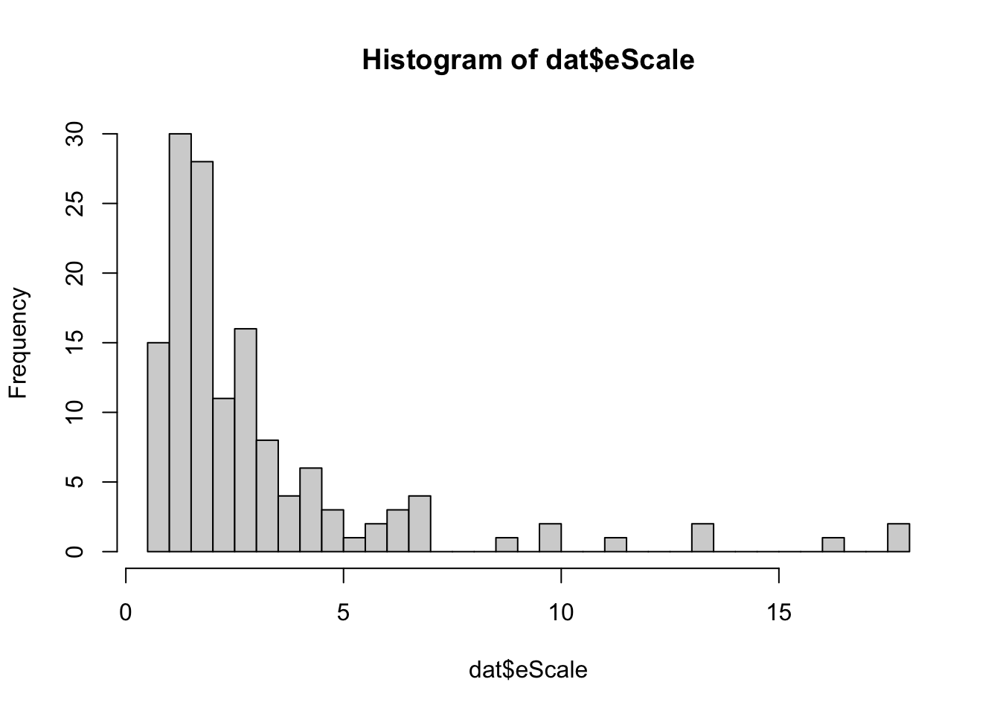
sum( dat$eScale >2)
[1] 67
Based on the median values, we can conclude that most firms exhibit increasing returns to scale. The histogram shows that the majority have an elasticity of scale between 1 and 2, with 67 firms showing implausibly high returns (\(\varepsilon>2\)) to scale.
Which firms exhibit high returns to scale? We plot elasticity of scale against size proxies, such as output and an input index.
# Plot elasticity of scale against input index and output indexplot( dat$qOut, dat$eScale, log ="x" )abline( 1, 0 )
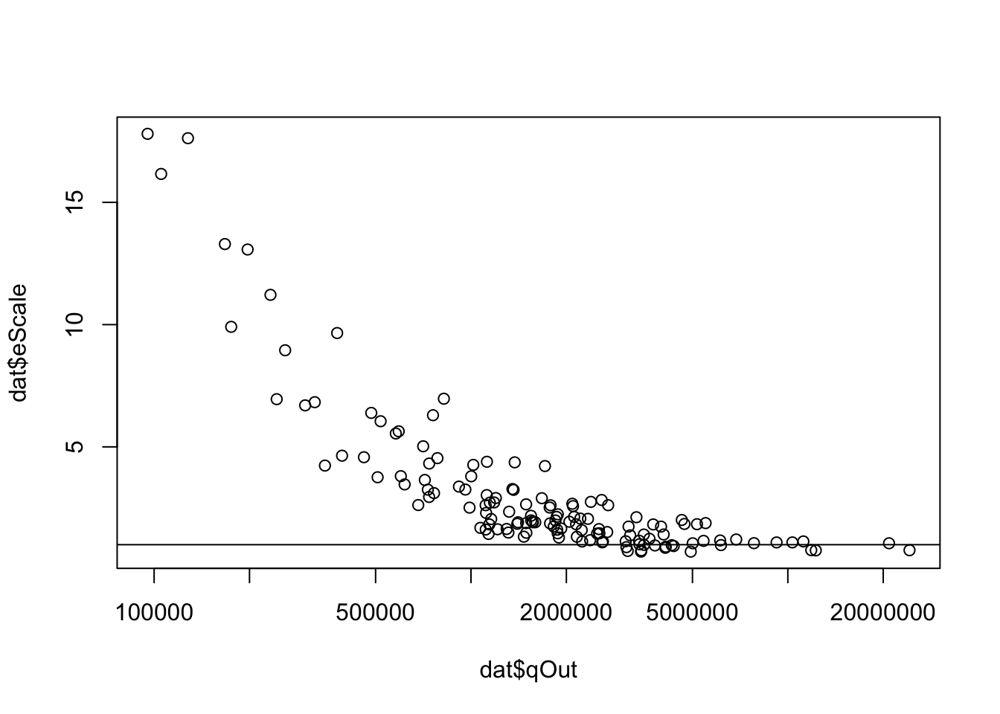
plot( dat$X, dat$eScale, log ="x" )abline( 1, 0 )
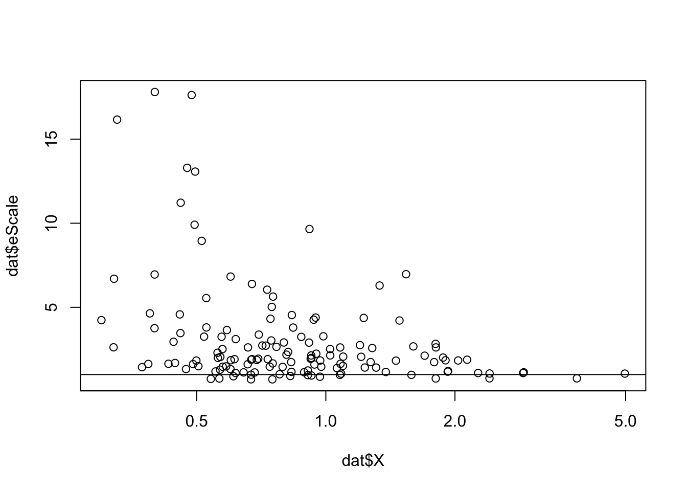
The scatter plots typically show that firms employing smaller input levels exhibit increasing returns to scale, which is expected. A few firms display decreasing returns to scale, and this is observed among firms using both high and low input volumes.
Input substitution–MRTS and RMRTS
In a linear production function, the Marginal Rate of Technical Substitution (MRTS) is constant and can be measured as the ratio of the coefficients of the inputs. The relative MRTS (RMRTS) will however vary across firms, due to the variation in output elasticities. Furthermore, since we do not know the units of measurement for the input variables, the interpretation of MRTS is not meaningful. In this context, RMRTS is more useful. As we have shown earlier, it can be expressed as the ratio of output elasticities and is therefore interpreted in a unit-free manner.
In our data set, most firms require approximately twenty percentage more capital or around two percentage more materials to make up for a one percentage reduction in labor.
Profit-maximizing behavior
According to the profit-maximizing principle, the marginal value products—calculated as the output price multiplied by the marginal products—must equal the input prices at the optimal input choices. We plot marginal value products against the input prices across firms (we scale the axes for better viewing).
The scatter plot All firms could increase their profits by using more labor and materials, and some could also benefit from using more capital. Since most firms operate under increasing returns to scale, it is not surprising that many would gain from increasing most—or even all—input quantities. Why do not they do so? It might be possible there is imperfections in the input markets so that input prices do not perfectly reflect the marginal contributions.
Cost-minimizing behavior
According to the cost-minimizing principle, the ratio of input prices must equal the absolute value of the MRTS between two inputs, which is constant in the case of a linear production function (the ratio of the coefficients). We create a histogram of input price ratios and compare it to the MRTS, represented by a solid vertical line.
# Draw histogram of input price ratioshist( dat$pCap / dat$pLab )abline( v =- mrtsLabCap, lwd =3 )
All plots provide evidence that most firms could benefit from substituting capital with labor, and capital with materials. When comparing labor and materials, most firms would benefit from substituting materials with labor. These observations align with our findings based on the profit-maximizing principle.
Other production function
Using similar techniques, we can estimate other production function forms with our data and evaluate the following:
Theoretical consistency
Productivity and output elasticity
Returns to scale
Input substitution
Profit-maximizing and cost-minimizing behavior
Below, we will estimate another form: the Cobb-Douglas and compare the two estimated models. Additional specifications (Quadratic form and Translog form) can be found in (Henningsen 2024).
Cobb-Douglas production function
The specification of a Cobb-Douglas production function with N inputs is
\[
y=A\prod_{i=1}^{N}{x_i}^{\alpha_i}
\]
Although the specification is not linear, a simple modification allows us to express the relationship in a linear form, enabling us to estimate all parameters using linear regression techniques.
Taking natural log on both sides, we can express the above form (replacing \(\ln A\) by \(\alpha_0\)) as
# Fitting a linear modelprodCD <-lm( log( qOut ) ~log( qCap ) +log( qLab ) +log( qMat ), data = dat )summary( prodCD )
Call:
lm(formula = log(qOut) ~ log(qCap) + log(qLab) + log(qMat), data = dat)
Residuals:
Min 1Q Median 3Q Max
-1.67239 -0.28024 0.00667 0.47834 1.30115
Coefficients:
Estimate Std. Error t value Pr(>|t|)
(Intercept) -2.06377 1.31259 -1.572 0.1182
log(qCap) 0.16303 0.08721 1.869 0.0637 .
log(qLab) 0.67622 0.15430 4.383 0.00002327 ***
log(qMat) 0.62720 0.12587 4.983 0.00000187 ***
---
Signif. codes: 0 '***' 0.001 '**' 0.01 '*' 0.05 '.' 0.1 ' ' 1
Residual standard error: 0.656 on 136 degrees of freedom
Multiple R-squared: 0.5943, Adjusted R-squared: 0.5854
F-statistic: 66.41 on 3 and 136 DF, p-value: < 0.00000000000000022
The regression results show that the coefficients for ln(labor) and ln(materials) are positive and significant, while the coefficient for ln(capital) is not. However, from a theoretical perspective, capital is important, so it would be prudent not to drop it from our estimated model.
Is it a good fit?
Note that the \(R^2\) is 0.59, but it is not directly comparable to the \(R^2\) from a linear model. Later, when comparing various models, we will use a hypothetical \(R^2\) value that measures the correlation between the observed values of the dependent variable and the residuals.
We examine the scatterplot of predicted values against observed values. Note that we must exponentiate the predicted values, as the model was estimated using log-transformed variables. In addition, we scale the axes using a logarithmic scale for finer view; otherwise, we will see a cluster of observation near the origin.
The scatter plot reveals some interesting patterns. For low observed y values, the predicted values are systematically higher than the observed ones, while the opposite is true for large y values. This suggests that the Cobb-Douglas form may not be a good fit, as it systematically overestimates and underestimates the dependent variable within specific ranges of y values.
Theoretical consistency
Essentiality: Theoretically, all inputs are essential in Cobb-Douglas form (if we drop any, the output becomes zero). Since ln(zero) is undefined, the estimated form trivially satisfies essentiality.
Monotonicity: The positive and significant coefficients of labour and materials satisfy the monotonicity condition.
Non-negativity: Although the intercept term is negative, \(exp(\alpha_0)\) is positive, and so predicted output remains positive.
Studying properties of the production function
Productivity–Output elasticity
The estimated linear production function implicitly assumes that all firms share the same marginal productivity. However, this is not the case with the Cobb-Douglas production function. In the Cobb-Douglas form, it can be shown that output elasticity is fully determined by the model parameters, implying that the estimated model assumes that all firms have the same output elasticity.
Therefore, the elasticity of each input is directly measured by the linear model coefficients—0.16 for capital, 0.67 for labor, and 0.62 for materials. This means that, for example, a one-percent change in labor will result in an average 0.67 percent change in output for these firms.
Comparing these numbers with our findings from the linear model, where we observe a distribution of elasticity measures across the firms in our dataset, we see that the elasticity measures for labor and materials are considerably smaller in the Cobb-Douglas form, while the effect is opposite for capital.
Below, we calculate marginal productivity (MP) at the firm level and examine its frequency distribution. Since MP can be calculated at a specific output level, we compute it at the observed output level y for each firm. If our model is a good fit, we could also compute it using the predicted y values. The distribution of MP values from this approach might provide a clearer picture of the true underlying distribution of productivity. See the discussion in (Henningsen 2024).
If firms increase capital input by one unit, the output for most firms will rise by between 0 and 8 units. Similarly, a one-unit increase in labor input leads to an output increase of between 2 and 12 units for most firms, while a one-unit increase in materials results in an output boost of between 20 and 80 units. See the histograms of MPs calculated at the predicted y values in (Henningsen 2024), which show similar results.
Returns to scale
Recall that the elasticity of scale is the sum of output elasticities, which in this case, is measured as \(\varepsilon=\sum_{i} \alpha_i=1.466\)
As with our output elasticity measures, the Cobb-Douglas model implicitly assumes a constant elasticity of scale across all firms. On average, it indicates increasing returns to scale, suggesting that firms could benefit from scaling up production.
Input substitution
As before, we calculate both MRTS and RMRTS, each with its own advantages and disadvantages in this context. Interpreting MRTS is challenging because the units of measurement for the input variables are unknown. However, unlike in the case of a linear production function, MRTS varies across firms, offering a broader perspective on how firms differ in their input substitution choices. RMRTS, on the other hand, provides a unit-free interpretation, but in the case of the Cobb-Douglas production function, it remains globally constant across firms.
According to the MRTS based on the Cobb-Douglas production function, most firms require between 0.5 and 2 additional units of capital and between 0 and 0.15 additional units of materials to compensate for a one-unit reduction in labor. These findings are very similar to those from the linear production function case.
RMRTS should be interpreted in percentage terms. If a firm wants to reduce labor use by one percent, it must increase capital use by 4.15 percent or material use by 1.08 percent to maintain the same output level.
An important property of Cobb-Douglas production function is that the direct elasticities of substitution are always equal to one. As a result, the estimated model will not offer any insights into this aspect.
Profit-maximizing behavior
The profit-maximizing principle suggests that the marginal value products must equal the input prices at the optimal input choices. We plot marginal value products against the input prices across firms (we scale the axes for better viewing).
These plots show that the marginal value products are nearly always equal to or higher than the corresponding input prices. Therefore, most firms could increase their profits by using more of all inputs. Given that the estimated Cobb-Douglas technology exhibits an increasing returns to scale, it is not surprising that firms would benefit from increasing input quantities. These observations are also consistent with our findings from the estimated linear production specification. As we pointed out earlier, their decision not to employ more inputs might be related to imperfections in the input markets.
Cost-minimizing behavior
The cost-minimizing principle suggests that the ratio of input prices must equal the absolute value of the MRTS between two inputs.
Most firms could benefit from substituting capital with labor, and capital with materials. These observations align with our findings based on the profit-maximizing principle.
Comparison of the two models
When one functional form is nested within another (for example, linear vs. quadratic production function, or Cobb-Douglas vs. Translog production function), standard statistical tests can be used to compare the two models; see the sections on estimating quadratic or Translog production functions in(Henningsen 2024). In those cases, the tests rejected the linear production function in favor of the quadratic, while the evidence for rejecting the Cobb-Douglas in favor of the Translog production function was less conclusive.
However, in our discussion, we are comparing two non-nested models—Linear and Cobb-Douglas. Comparing non-nested models is more complex.
We will make a series of observations to compare the pros and cons of these two models based on our data.
Since the two models have different dependent variables, y and ln(y), we cannot directly compare their R-squared values. Instead, we compare the R-squared from the linear model with a hypothetical R-squared based on the estimated Cobb-Douglas model, which measures the correlation between the observed y values and the residuals. Alternatively, we can reverse the process by comparing the R-squared from the Cobb-Douglas model with a hypothetical R-squared based on the estimated linear model, measuring the correlation between the observed ln(y) values and the residuals.
# Linear model: R-square of ysummary(prodlinear)$r.squared
# Cobb-Douglas: R-square of ln(y)summary(prodCD)$r.squared
[1] 0.5943154
While the two models provide similar R-squared values regarding y, the R-squared value regarding ln(y) is considerably higher for the Cobb-Douglas function than for the linear function. However, as we have pointed out before, the scatter plot of observed against predicted values shows a different picture between the two models. It appears that the Cobb-Douglas form is systematically overestimating or underestimating y values for a broad range of firms.
Based on our analysis above, we have seen that the estimated linear model also failed in some aspects. For example, it predicted a negative output value for one observation and showed implausibly high output elasticities and elasticity of scale for several firms.
We apply Ramsey’s Regression Equation Specification Error Test (RESET) on the two functional forms using the resettest command.
The linear form is clearly rejected, while the Cobb-Douglas form is accepted at the 5 percent significance level but rejected at the 10 percent level. Additional specifications—Quadratic and Translog production functions—are estimated in (Henningsen 2024), where the Translog production function appears to provide a better fit among the four specifications. Below we listed various criteria for comparative assessment of the two models.
———. 2024. “Introduction to Econometric Production Analysis with r.”Department of Food and Resource Economics, University of Copenhagen Sixth draft version.
Hicks, John. 1963. The Theory of Wages. Springer.
Ivaldi, Marc, Norbert Ladoux, Hervé Ossard, and Michel Simioni. 1996. “Comparing Fourier and Translog Specifications of Multiproduct Technology: Evidence from an Incomplete Panel of French Farmers.”Journal of Applied Econometrics 11 (6): 649–67. https://doi.org/10.1002/(sici)1099-1255(199611)11:6<649::aid-jae416>3.0.co;2-4.
Varian, Hal R. 1992. “Microeconomic Analysis.” WW Norton & Company.
Footnotes
You might notice variations in how this set is represented in different books. For example, in Figure 2, we include vectors (y, x), where y represents output and x represents input. In some cases, the production set is defined as the collection of all (y,−x), where the negative sign indicates the use of inputs, and the positive sign indicates the production of output; see, for example,(Varian 1992).↩︎